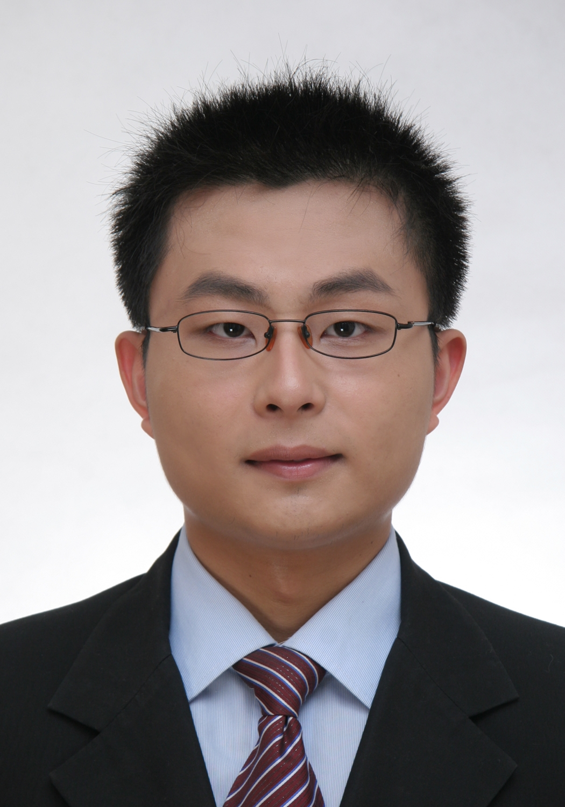
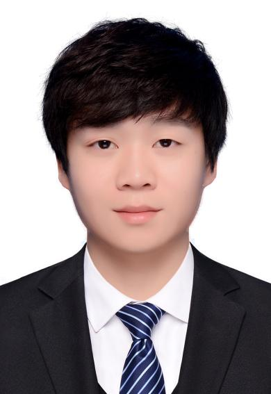

|

|
尹峰 Feng YinAssistant Professor yinfeng@cuhk.edu.cn Feng Yin's homepage
>> Professor Feng Yin received the B.Sc. degree from Shanghai Jiao Tong University, China, in 2008, and the M.Sc. and Ph.D. degrees from Technische Universität Darmstadt, Germany, in 2011 and 2014, respectively. From 2014 to 2016, he was with Ericsson Research, Linkoping, Sweden, working on the European Union FP7 Marie Curie Training Programme on Tracking in Complex Sensor Systems (TRAX). Since 2016, he has been with The Chinese University of Hong Kong, Shenzhen and also affiliated with the Shenzhen Research Institute of Big Data (SRIBD). He is currently serving as the Associate Editor for the Elsevier Signal Processing Journal and also as an IEEE senior member. |
PhD
|
|
张天健 Tianjian Zhang2018.08 ~ Now tianjianzhang@link.cuhk.edu.cn
>> Tianjian Zhang received his BSc degree in Applied Physics from Xi’an Jiaotong University, China, in 2018. He is currently a PhD student at The Chinese University of Hong Kong, Shenzhen, jointly trained with the Shenzhen Research Institute of Big Data. |
|
|
戴一珏 Yijue Dai2018.08 ~ Now yijuedai@link.cuhk.edu.cn
>> Yijue Dai received the M.S. degree from Xiangtan University in 2017. She is currently a Ph.D. candidate at the Chinese University of Hong Kong, Shenzhen. |
|
|
张策尧 Ceyao Zhang2019.01 ~ Now ceyaozhang2@link.cuhk.edu.cn
>> Ceyao Zhang received his B.Sc. degree in Applied Mathematics from the Capital University of Economics and Business in 2016 and a double B.A. degree in Economics from Peking University in 2017. He is currently a Ph.D. student at The Chinese University of Hong Kong, Shenzhen. |
|
|
林志地 Zhidi Lin2019.08 ~ Now zhidilin@link.cuhk.edu.cn Zhidi's homepage
>> Zhidi Lin received the M.Sc. degree in communication and information systems from Xiamen University, Xiamen, China, in 2019. He is currently working towards the Ph.D. degree with the School of Science and Engineering, The Chinese University of Hong Kong, Shenzhen, China. |

|
高军 Jun Gao2019.08 ~ Now jungao@link.cuhk.edu.cn
>> Jun Gao received her M.Eng degree in electronic and communication engineering from Beijing University of Posts and Telecommunications, Beijing, China, in 2019. She is currently pursuing her Ph.D. degree with the School of Science and Engineering, The Chinese University of Hong Kong, Shenzhen, China. |
|

|
颜文仲 Wenzhong Yan2020.01 ~ Now wenzhongyan@link.cuhk.edu.cn
>> Wenzhong Yan received his BSc and MSc degrees from Northwestern Polytechnical University, China, in 2016 and 2019, respectively. He is currently a PhD student at The Chinese University of Hong Kong, Shenzhen. |
|
|
孙艺勇 Yiyong Sun2021.08 ~ Now yiyongsun@link.cuhk.edu.cn
>> Yiyong Sun received his B.Eng. and M.Sc. from Tongji University and National University of Singapore, respectively. He is currently a Ph.D. student at The Chinese University of Hong Kong, Shenzhen. |
|
王俊涛 Juntao Wang2022.08 ~ Now juntaowang@link.cuhk.edu.cn
>> Juntao Wang received his B.S. degree in Statistics from the Chinese University of Hong Kong, Shenzhen (CUHK-Shenzhen) in 2022. Now, he is a Ph.D. student at CUHK-Shenzhen, jointly trained with the Shenzhen Research Institute of Big Data. |
|
|
黄心宇 Xinyu Huang2023.08 ~ Now xyhuang@link.cuhk.edu.cn Xinyu's homepage
>> Xinyu Huang received the B.Eng degree in optoelectronic information science from the University of Electronic Science and Technology of China (UESTC) in 2023. Now he is a Ph.D. student of The Chinese University of Hong Kong, Shenzhen in electronic engineering, supervised by Prof. Feng Yin and Prof. Tsung-Hui Chang. |
|
|
Richard Cornelius Suwandi2023.08 ~ Now richardsuwandi@link.cuhk.edu.cn Richard's homepage
>> Richard Cornelius Suwandi received his B.Sc. degree in Statistics from the Chinese University of Hong Kong, Shenzhen (CUHK-Shenzhen) in 2023. He is currently a Ph.D. student at CUHK-Shenzhen, supervised by Prof. Feng Yin and Prof. Tsung-Hui Chang. |
MPhil
|
|
张远航 Yuanhang Zhang2020.10 ~ Now 220019088@link.cuhk.edu.cn
>> Yuanhang Zhang received his B.E. Degree in Electronic and Information Engineering from Huazhong University of Science and Technology, Wuhan, China, in 2020. He is currently an MPhil student in Computer Science and Information Engineering at the Chinese University of Hong Kong, Shenzhen. |

|
瞿啸东 Xiaodong Qu2020.10 ~ Now xiaodongqu@link.cuhk.edu.cn
>> Xiaodong Qu received the B.E. degree from Wuhan University, China, in 2020. He is currently pursuing the MPhil degree with the School of Science and Engineering, The Chinese University of Hong Kong, Shenzhen, China. |
Alumni and Visitors
|
|
张馨怡 Xinyi Zhang2020.09 ~ 2022.11 Former MPhil. StudentCurrent Affililation: China Internet Exchange Center, Shenzhen. |
|
孔庆磊 Qinglei KongFormer Postdoc.Current Affililation: Harbin Institute of Technology, Shenzhen. |
|
Di JinFormer Co-Supervised PhD. StudentCurrent Affililation: Merck, Germany. |
|
Yuxin ZhaoFormer Co-Supervised PhD. StudentCurrent Affililation: Ericsson Research, Sweden. |
|
Si DongFormer MSc. StudentCurrent Affililation: Microsoft Research Asia, Beijing. |
|
Ang LiFormer MSc. StudentCurrent Affililation: Ericsson, Beijing. |